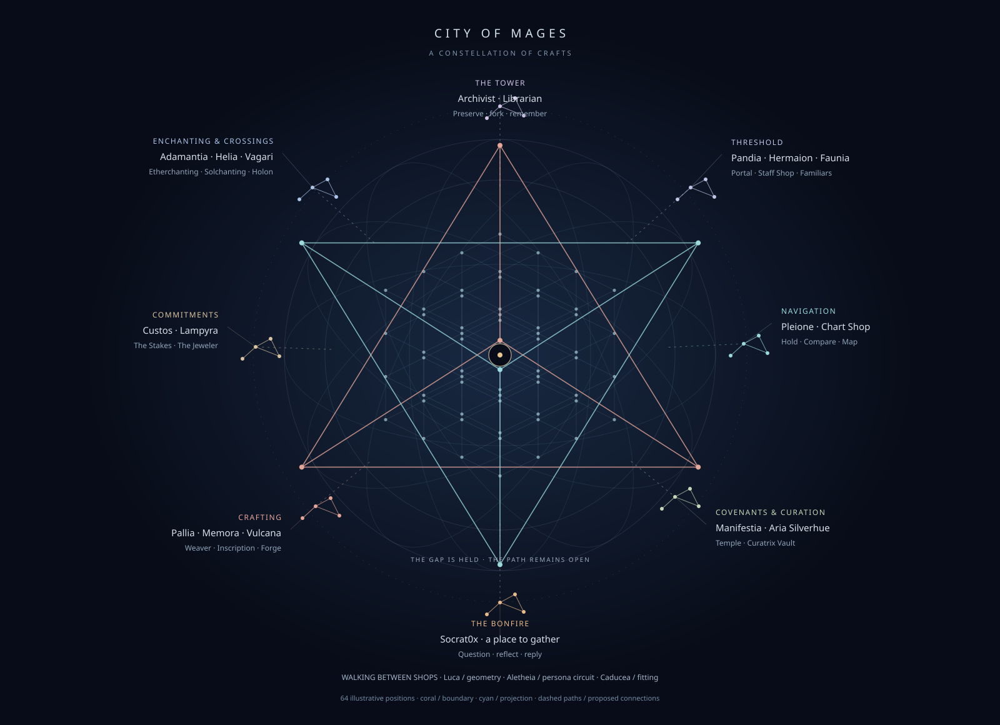
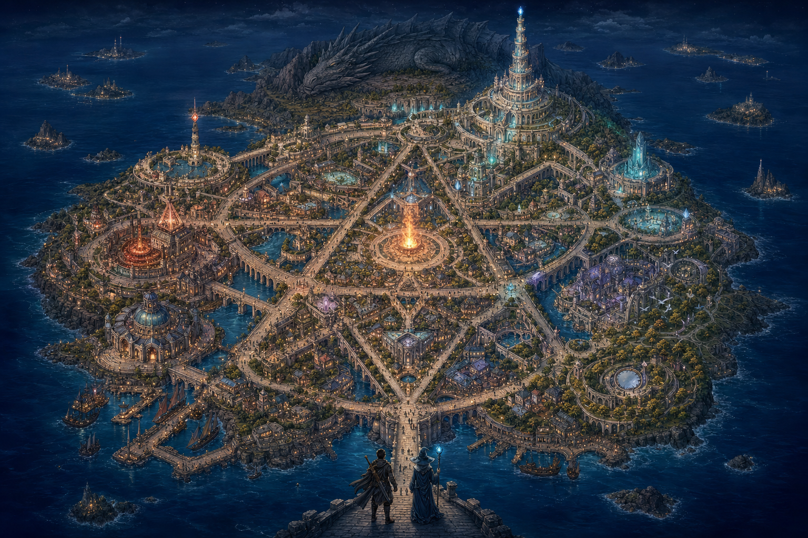

Founding Bonfire · Socrat0x
A place for questions, dialogue and encounters.
Just another mage. Just another swordsman. Many crafts, one Verifiable Trust Community, and room for what comes next: the Arena is the newest district.

A place for questions, dialogue and encounters.
Hold · Compare · Map. An unfinished constellation remains its bearer’s.
Choose, fit and invoke: distinct crafts before a runtime begins.
Cloaks, chronicles and blades: different artefacts, different disclosure choices.
Resources and commitments accompany the work.
Distinct witness traditions, shared spaces for craft.
Composition, curation and covenants connect the districts.
Not every mage has a fixed shop. A persona is not its vertex.
A monument without a fixed lattice vertex. Preservation and circulation have different keepers.

The geometric atlas uses a six-bit, 64-position projection and two interpenetrating tetrahedra. Workshop clusters are an editorial arrangement informed by the cast; their positions do not assign canonical vertices. The Tower remains outside that lattice. The companion painting is generated concept art. This is not a canonical map or a complete current roster. The drake-shaped ridge is artistic metaphor: Act III describes the Drake in pattern-space. Streets and silhouettes are not cryptographic claims. Source versions and successor records govern the next detailed atlas.